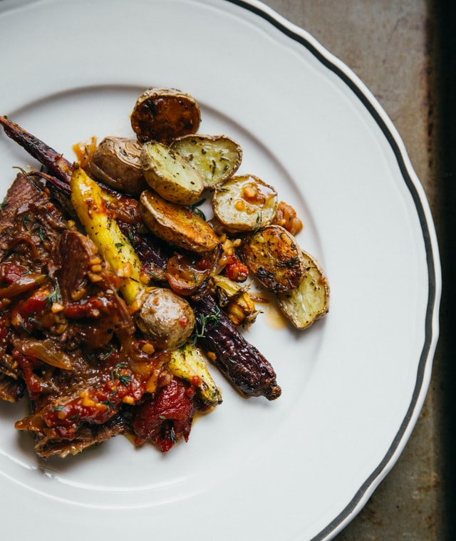

Pot Roast

Description
This is a super easy oven-baked pot roast with roasted vegetables.
A perfect cozy winter meal.
Ingredients
- 2 pounds of beef pot roast
- 3 potatoes peeled and cut
- 1 large onion
- 2 carrots peeled and cut
- 2 stalks of celery chopped
- 3 cups of water
- salt and ground pepper
garlic salt
Steps
- Preheat oven to 300 degrees F (150 degrees C).
- Place roast in a large baking pan; arrange potatoes, onion, carrots, and celery around
roast. Pour 3 cups water into baking pan. Season roast with salt, pepper, and garlic salt.
Cover pan with aluminum foil.
- Bake in the preheated oven until roast is browned and cooked through, about 3 hours.
An instant-read thermometer inserted in the thickest part of the roast should read 145 degrees F (65 degrees C).
Transfer roast to an oven-safe platter. Remove vegetables using a slotted spoon and arrange around roast.
- Reduce oven temperature to 200 degrees F (95 degrees C). Place platter with roast and
vegetables in the oven to keep warm.
- Pour the remaining juices from the baking pan into a saucepan; bring to a boil. Stir 1/2 cup water and
cornstarch together in a bowl until smooth; pour into boiling pan juices. Reduce heat to medium; cook, stirring constantly,
until gravy is thick, about 5 minutes; season with salt and pepper. Stir in browning sauce.
Back to Odin Recipes